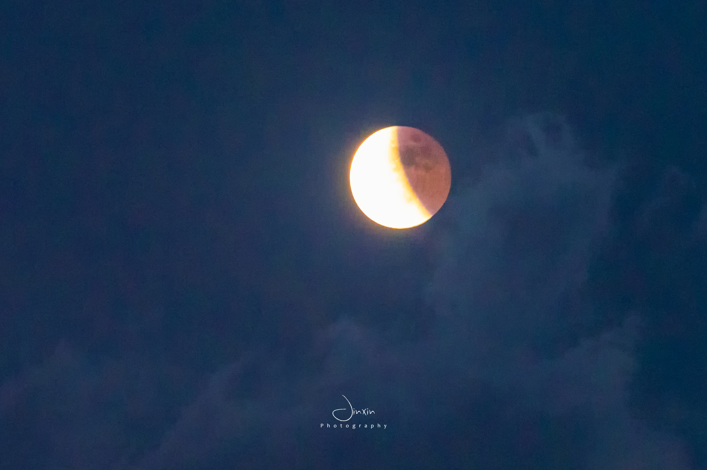
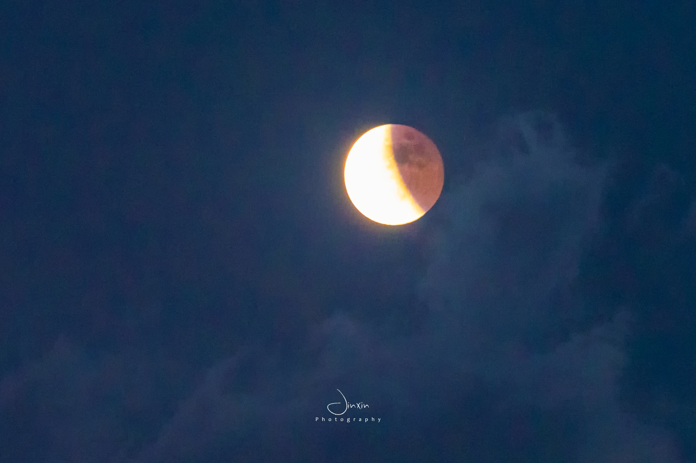
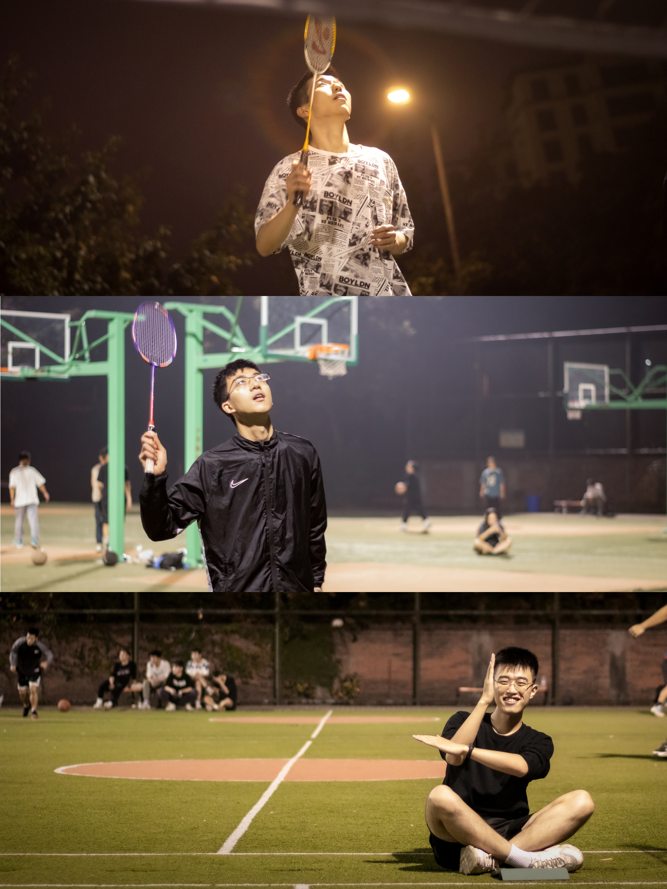
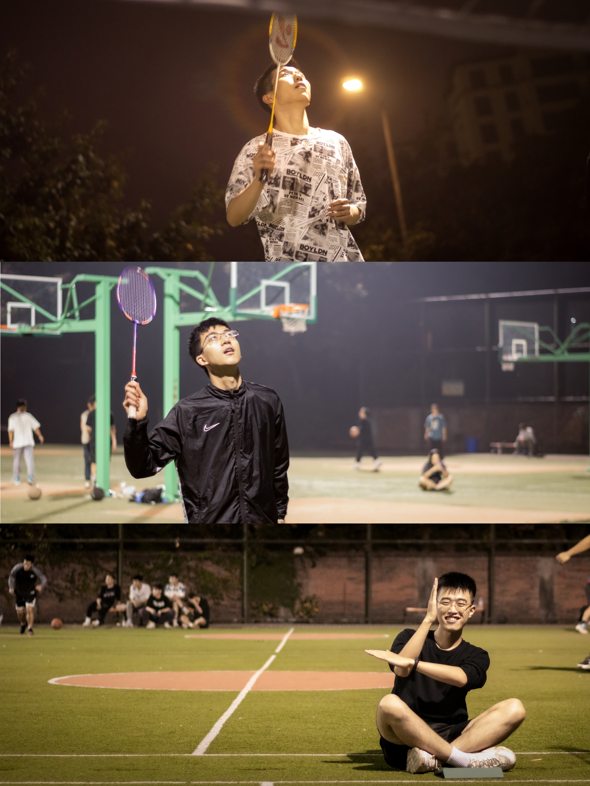

About Me
Hi, here is Xin Jin (金 鑫), a photography enthusiast. I enjoy shooting landscape scenery, especially astrophotography. I like looking up at the stars and the Milky Way at night, and I also love capturing meteor showers! I once led my friends to chase the "Perseid Meteor Shower". We lay on the road and watched the meteors streaking across the sky one by one. That feeling was truly wonderful! I also do some film photography. I'm fond of that natural touch, where there is no algorithm to process the images, just completely natural and unalterable moments. I've also tried portrait photography.


 



 
